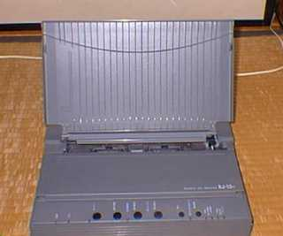

| 購入物 | ＢＪ－１５ｖ（ＣＡＮＮＯＮ） |
| 種別 | モノクロインクジェットプリンター |
| 購入日時 | １９９３年１月 |
 これを買ったのは１９９３年の１月。いまだに現役で使っています。当時３万円ほどで購入しました。ＢＪシリーズはいまだにきちんとインクが手に入りますし、出力もそれなりに奇麗です。当時ＶＰ－１３５Ｋを持っていたのですが、２４ドットの荒い出力に耐え切れず、３万円ほどで購入しました。私の持っている中でもっとも長寿なの周辺機器です。途中、カラープリンターがいくつか出ましたけれど、カラー出力があまり美しくなかったのと、モノクロ出力はあまり変わらなかったのとで、買い換えることはしませんでした。問題点を唯一あげるなら、シートフィーダーがないことで、数枚印刷するときは面倒を味わったことが多々あります。もちろん、オプションで売られているので、何度か買おうかと思ったのですが、結局買わずに現在に至っています。 最近は、Ａ４レーザープリンタが非常に安価になってきましたし、カラープリンタの品質がようやく納得できるものになってきました。今プリンタを買うのは正解でしょう。 | |
| 購入物 | ＥＣＤ－２５０（エレコム） |
| 種別 | 倍速SCSI CD-ROM ドライブ |
| 購入日時 | １９９４年９月 |
 ５“ＦＤＤの上の最上段に取り付けられているのは今の姿。当時はきちんと外付の箱に収まっていました。見てのとおり、いまだに現役で使用されています。シークタイム２２０ｍｓ、転送速度300KB/Sと、当時としは高速なスペック。CD－ROMの使い道の大半は、CD-ROMデータの読み出し、ソフトウェアのインストールなので、特に不便を感じず、現状に至っています。 ５“ＦＤＤの上の最上段に取り付けられているのは今の姿。当時はきちんと外付の箱に収まっていました。見てのとおり、いまだに現役で使用されています。シークタイム２２０ｍｓ、転送速度300KB/Sと、当時としは高速なスペック。CD－ROMの使い道の大半は、CD-ROMデータの読み出し、ソフトウェアのインストールなので、特に不便を感じず、現状に至っています。
今や倍速CD-ROMなんてただ同然の値段で売られていますが、倍速でもCD-ROMをよむという性能はほとんど変わりません。と言っても、友人のうちで１２倍速のCDを使った後に、うちに戻って同じソフトウェアをインストールしたときはあまりの遅さに愕然としました。とはいっても、そうそうソフトウェアのインストールなんてありませんし、喉元過ぎれば熱さ忘れるで、これからも使いつづけるであろう一品であります。 | |
| 購入物 | MF-8617（IDEXON） |
| 種別 | マルチスキャン１７インチモニター |
| 購入日時 | １９９４年６月 |
 私の持っている周辺機器の中では古参の部類になってしまいました。きっちり定価（￥１０８，０００）で買いました。買った当初はＡＴ互換機を使うつもりなどは毛頭なく、当時持っていたＰＣ－４８６ＧＲ＋（ＥＰＳＯＮ）に接続するために買った物です。当時４８６ＧＲ＋にカノープスのグラフィックボードをつけて使っていたのですが、やっぱり画面は広い方がいいと、店頭で品質を確認し、「「このレベルなら納得できる」と購入に踏み切りました。 私の持っている周辺機器の中では古参の部類になってしまいました。きっちり定価（￥１０８，０００）で買いました。買った当初はＡＴ互換機を使うつもりなどは毛頭なく、当時持っていたＰＣ－４８６ＧＲ＋（ＥＰＳＯＮ）に接続するために買った物です。当時４８６ＧＲ＋にカノープスのグラフィックボードをつけて使っていたのですが、やっぱり画面は広い方がいいと、店頭で品質を確認し、「「このレベルなら納得できる」と購入に踏み切りました。
対応周波数は２４．８KHz～８２KHz。下は９８ノーマルから、上は１２８０×１０２４ノンインターレースまで当時としては安価なわりには対応周波数も広く、画質もよく、値段も安価でした。また、ＢＮＣと１５ピンの二系統入力があるのも魅力です。ただし、操作性に問題があり、ディスプレイ切り替え器の方が便利です。ただし、ディスプレイ切り替え器は画質の劣化がひどいのでお勧めできません。 現在後継のＭＦ－８６１７Ｅが半値ぐらいで売られていますが、友人のうちで見たときは私のよりも画質がよく、「「無理にＭＴにしなくてもいいかな？」と思いました。「ディスプレイは毎日使う物だから、納得のいく物を」と言って高いモニタを奨める方もいますが、わたし個人としましては目で見て納得のいく品質であれば、それでいいのではないでしょうか？ | |